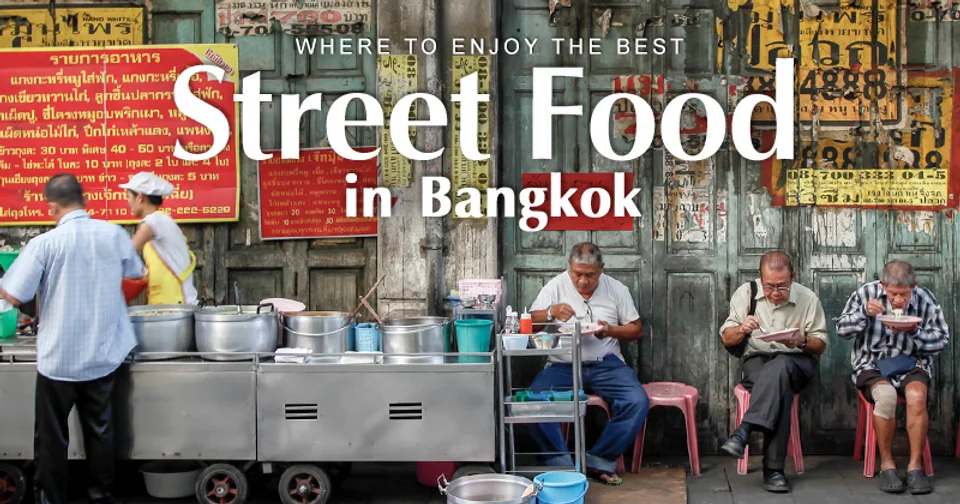
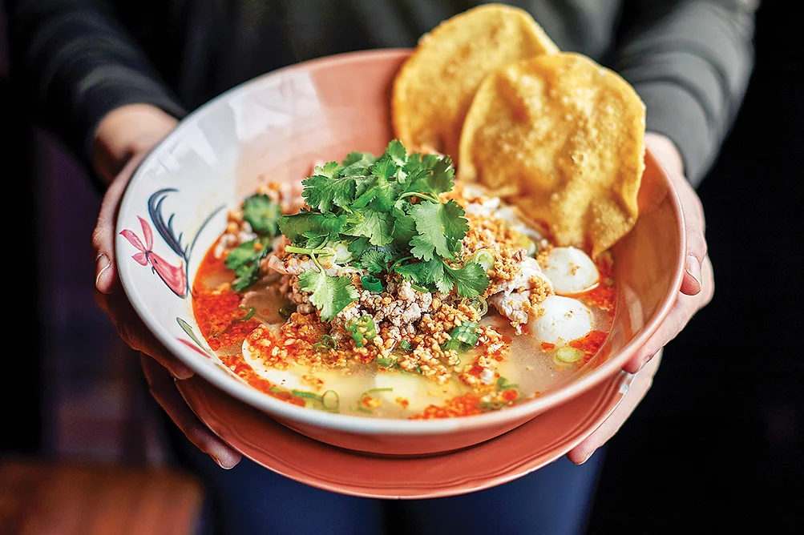
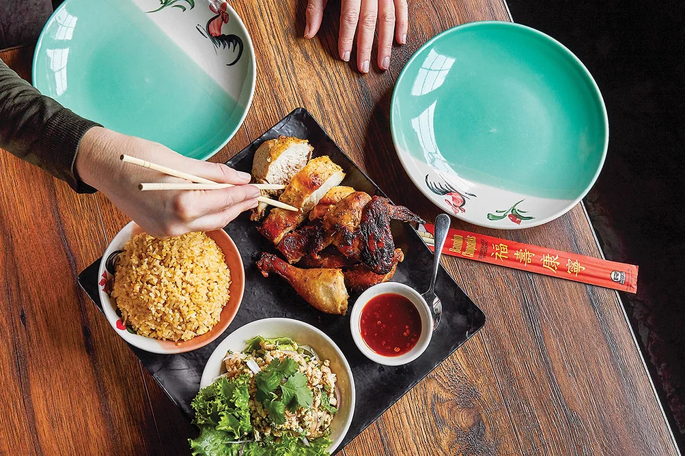
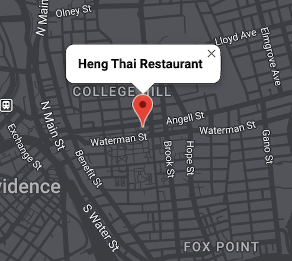

Thailand to Providence
Bringing the authentic Thai street foods.
HOURS
Tue. - Sun.
Mon.
11:30 AM - 3:00 PM;
4:00 PM - 9:30 PM (Last call at 9:00 PM)
CLOSED
ORDER & RESERVATION
PICK-UP
OR
Call 401-751-1651.
DELIVERY
by Doordash
RESERVATION
To make a reservation, call 401-751-1651 .
THAI STREET FOOD

Retun back to true Thai cuisine...


ADDRESS & CONTACT

Address
165 Angell St., Providence 02906
Phone
401-751-1651
Contact Form
Click HERE to leave us a message.